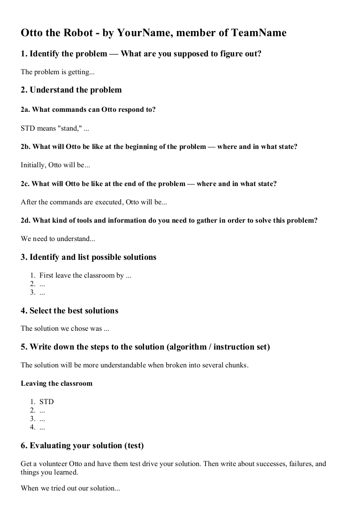

The role of Otto the Robot will now be played by...
Working in groups of 2-4 students, complete the problem solving process to solve the following problem: getting a student from our classroom (sitting in a chair) to the library in the most efficient way. The student must be sitting in a chair in the library for the solution to be complete.
Hints
- You will be required to gather other information such as hall distances, number of steps, and location of rooms
- You may want to break down the entire solution into smaller parts (object oriented analysis)
Problem solving process
- Identify the problem
- Understand the problem (collect info to gather a knowledge base)
- Identify alternative solutions
- Select the best solution
- List the instructions to get to the cafeteria
- Evaluate your solution (test your steps)
OttoCode® — instructing Otto the Robot
The person in your group playing Otto the Robot can only understand these instructions:
STD— StandSIT— SitFWD— Take a step forward (must be standing)DWN— Take step down a stair (must be standing)UP— Take a step up a stair (must be standing)RT— Turn rightRPT(X)— Repeat instructions x times (x can be any number) — example:RPT(3) FWD- Otto always begins in a seated position
Saving your work
You will discuss your solution through an HTML report that each of you will create individually.
Open an editor and save the empty document as "1.04H-OttoTheRobot-LastName.html" in your Computer Programming 12 directory.
The assignment
- Create the empty framework of your HTML report
- Gather together a team of 2-4 students and start answering questions
- Together, consider 2-4 different solutions
- Choose the best solution
- Break your solution down into 5-9 chunks, and then write out the OttoCode® for each chunk
- Do a trial run of your solution with a student volunteering to be Otto
- Complete your HTML report individually and then hand it in
Code an HTML document that looks like this:

Evaluation (out of 10)
- ___/2 — Outcome 1.2 - apply mathematical concepts, including boolean logic, operators
- ___/2 — Outcome 1.3 - define a problem in explicit terms using object-oriented analysis
- ___/2 — Outcome 1.4 - identify and outline strategies to solve a problem
- ___/2 — Outcome 1.5 - apply a range of problem solving skills
- ___/2 — Quality of HMTL code